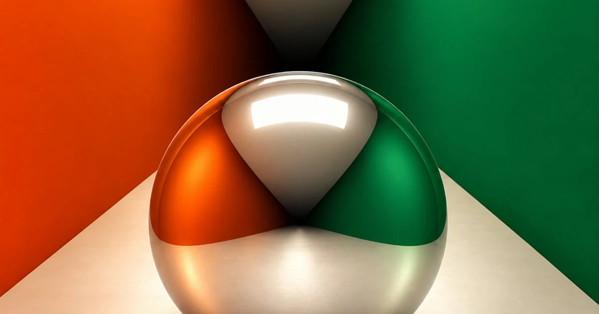
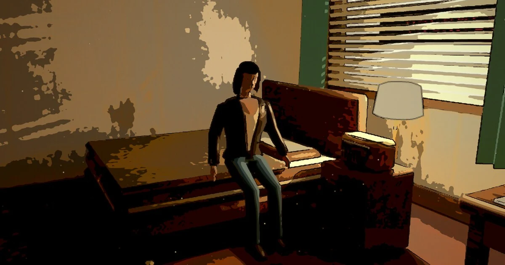
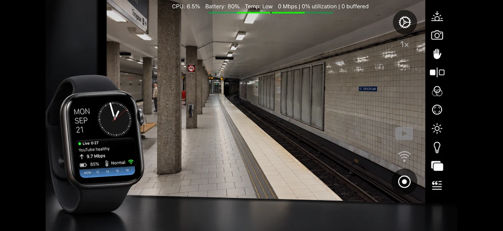

Eye the Isles
Ett stillsamt spel där du utforskar en levande skärgård, följer båtar och samlar ögonblick i din dagbok.
Besök Eye the IslesSimulering · Analys · Utveckling
Vi bygger simuleringar som hjälper företag att jämföra scenarier, förstå risker och fatta beslut.
 Scenarioanalys
Scenarioanalys
Vårt arbete
I omkring två decennier har Up to Change arbetat med simulering och analys. Vi kombinerar spelteori och prediktiva modeller för att undersöka hur olika antaganden och beslut kan påverka utfallet.
Det kan handla om att testa en ny prismodell, se hur en budget klarar en störning eller följa upp avkastningen på en investering.
Undersöker hur kunder och andra aktörer kan reagera när villkoren förändras.
Uppskattar sannolikheten för olika utfall utifrån data och antaganden.
Identifierar mönster och samband i historiska data.
Omsätter verksamhetens regler och samband i en beräkningsmodell.
Egna produkter
Vi utvecklar också egna appar för utforskning, kluriga pussel och livesändning.
Ett stillsamt spel där du utforskar en levande skärgård, följer båtar och samlar ögonblick i din dagbok.
Besök Eye the Isles
Luta din iPhone och hjälp fyra följeslagare genom 67 handgjorda passager, där tyngd, ljus och samarbete öppnar vägen.
Besök Corridorium
Natalia vaknar på ett motell med fel portfölj. Hon har en dag på sig att rentvå sitt namn. Som tur är börjar dagen om.
Besök Unmake My Day
Sänd live i HDR direkt från din iPhone till YouTube och spela samtidigt in lokalt. Visa matchresultat i sändningen med Tubeist Scorer.
Besök TubeistForskning och utveckling
Up to Change har medverkat i utvecklingen av metoder och verktyg som bevarar historik när information förändras.
En öppen databas som kan bevara motstridiga uppgifter och deras källor, tidpunkter och grad av säkerhet.
En metod för att utveckla datamodeller över tid och bevara tidigare versioner av både struktur och innehåll.
Kontakt · Stockholm
Berätta vad du vill undersöka, så kan vi prata om hur en simulering skulle kunna hjälpa.